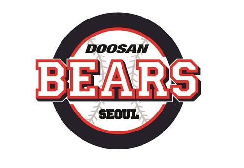
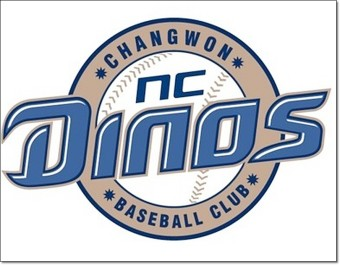

야구
야구는 9명씩 으로 이루어진 두 팀이 9회씩 공격과 수비를 번갈아하며 승패를 겨루는 구기 경기이다.
공격하는 쪽은 상대편 투수가 던진 공을 방망이로 치고 1,2,3루를 돌아 홈으로 돌아오면 1점을 얻는다.
점수를 많이 얻는 팀이 이긴다.
목차
야구의 기원에는 두 가지 설이 있다.
그 하나는 13세기에 영국에서 시작된 크리켓이 라운더즈가 되고 이것이 발달되어 베이스볼이 되었다는 것이다.
즉, 영국에서는 19세기 전반에 배트와 볼을 사용하는 놀이가 성행, 포코너즈라든가,피더,라운더즈 등으로 불리었다.
이것을 영국의 청교도들이 미국으로 이민하면서 미국 독립전쟁 이전에 동부 해안 지방에서 자주 경기가 시행되다가,
19세기 중엽에는 미국 각지에 보급, 발달되었다.
1982년에 출범한 한국의 프로야구 리그. 리그 명칭은 2014년까지 한국야구선수권대회였으나
2015년부터 리그 브랜드 아이덴티티 통합을 위해 KBO 리그라는 브랜드로 재출범하게 되었다.
주관 단체는 한국야구위원회1982년 프로스포츠로 탄생한 이래, 2021년 현재 40번째 시즌을 맞이한다.
리그 출범 원년에 참가한 구단은 삼성 라이온즈, OB 베어스, MBC 청룡, 삼미 슈퍼스타즈, 해태 타이거즈, 롯데 자이언츠이며
역사적인 첫 경기는 1982년 3월 27일, 동대문야구장에서 열린 MBC 청룡과 삼성 라이온즈의 경기.
1982년 3월 27일, 한국 첫 프로야구 경기. 이날 시구는 당시 대통령이던 전두환이 했고
경기 결과는 삼성 투수 이선희를 상대로 MBC 청룡의 이종도가 끝내기 만루 홈런을 쳐내며 MBC 청룡이 승리를 가져갔다.
총 10개의 팀, 9개의 구장에서 리그가 진행되고 있다.
미국과 캐나다의 프로야구 최상위 리그. 전 세계 모든 야구 선수들의 꿈의 무대이자 세계 최고 프로 야구 리그이기도 하다.
보통 줄여서 MLB 또는 빅 리그(Big League)라 부르기도 하며 일반적으로 메이저 리그라고 하면 보통 이것을 의미한다.
수많은 야구 선수들이 선망하는 꿈의 리그. 공식 사이트는 MLB.com. 상위(major) 리그가 있으니 하위(minor) 리그도 있기 마련
그래서 메이저리그와 대비되는 개념으로 마이너리그(MiLB)도 있다.
전 세계 프로야구 리그 중에서 가장 높은 수준의 리그이며 아메리칸 리그(American League)와 내셔널 리그(National League)로 구성된다.
내셔널 리그에 15개팀, 아메리칸 리그에 15개팀으로 총 30개팀이 등록되어 있으며, 29개팀은 미국에 연고지를 두고 있으며
토론토 블루제이스만이 캐나다 토론토를 연고로 하고 있다.
주요 구단 마크

